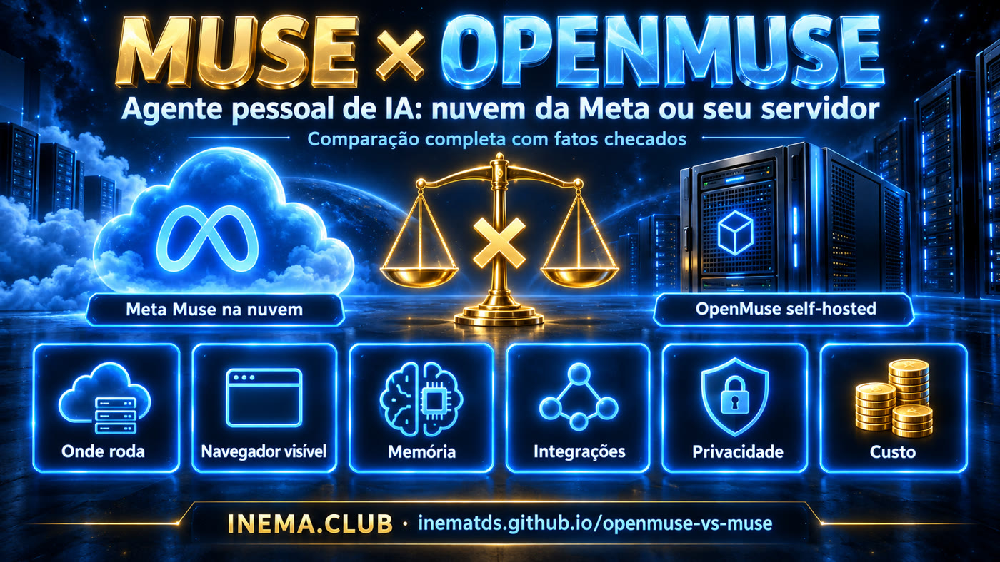

Meta Muse y OpenMuse (CopilotKit, licencia MIT) prometen la misma idea: un agente con computadora y navegador propios, al que puedes ver trabajar. Comparamos ambos punto por punto y verificamos cada afirmación con fuentes primarias.

Esta página reúne lo que circula en las redes sociales sobre Muse y OpenMuse y verifica cada afirmación con el anuncio oficial de Meta, la cobertura de prensa y el propio código de OpenMuse en GitHub.
Agente personal lanzado por Meta el 8/set/2026. Cada usuario obtiene una VM segura dedicada en la nube de Meta, con un navegador Chromium que puede observar y controlar. Plan gratis, US$ 20 y US$ 100/mes.
Respuesta de código abierto de CopilotKit, creada el 15/set/2026, licencia MIT. Se ejecuta en tu servidor: app Expo (iOS/Android/web), API Hono, navegador mediante Playwright y computadora Linux en Docker, ambos opcionales. Está en fase alfa.
De las afirmaciones que circulan, la mayoría se confirma. Hay errores relevantes: el acuerdo de US$ 18 mil millones a veces aparece como “millones”; la base de datos citada como “Pika Light” es PGlite, y OpenMuse sí depende de un servicio externo.
La diferencia no está tanto en las funciones como en dónde viven el agente y sus datos y cuánto trabajo exige la instalación.
| Criterio | ☁️ Meta Muse | 🖥️ OpenMuse |
|---|---|---|
| Dónde funciona | VM dedicada (“Muse Secure VM”) en la nube de Meta, mantenida por Meta | En tu notebook o VPS; computadora Linux en Docker opcional, sin root ni montar carpetas del host |
| Navegador | Chromium virtualizado y visible; puedes tomar el control cuando quieras | Worker opcional con Playwright/Chromium, perfiles persistentes y “takeover” de la misma sesión |
| Terminal / archivos | Dentro de la VM administrada | Contenedor Docker opcional, límite de 30 s por comando, almacenamiento persistente |
| Personalización y memoria | Nombre, avatar, tono; aprende de las conversaciones; “olvida esto” | Perfil editable (nombre, tono, avatar, recuerdos) guardado en tu base de datos |
| Dónde se guardan los datos | Nube de Meta; Meta dice que no lo usa para anuncios | PGlite integrado (o PostgreSQL) en tu servidor. Pero las conversaciones pasan por CopilotKit Intelligence (servicio externo) |
| Integraciones | Correo electrónico y calendario; Meta apunta a pagos y compras | Gmail y Google Calendar mediante OAuth (credenciales propias). Salud, banca y redes sociales solo en la hoja de ruta |
| Voz y hardware | Voz en tiempo real, voz creada mediante descripción, avatar “Jolly”, gafas Meta con palabra de activación (Connect, 23/set) | Nada de eso todavía; la voz está en la hoja de ruta |
| Compras / dinero | Compra entradas y productos; los agentes de compra son la dirección declarada | Finanzas de solo lectura: importa CSV de transacciones y resume los gastos. No compra ni mueve dinero |
| Privacidad | Promesa: datos fuera de los anuncios; “Muse Confidential VM” con una clave solo del usuario, anunciada para fin de año | Tú controlas el host y las cuentas. Excepción: la persistencia de las conversaciones en CopilotKit Intelligence |
| Costo | Gratis + US$ 20 y US$ 100/mes | Código gratis (MIT); tú pagas el alojamiento, el modelo de lenguaje que conectes y lo que cobre CopilotKit Intelligence |
| Código | Cerrado, propietario | MIT, 2.765★ y 351 forks al 28/09/2026 |
| Instalación | Descarga la app o abre muse.ai e inicia sesión | Node 24 + pnpm 11.19.0 + clave de CopilotKit; ~6 comandos |
| Madurez | Producto lanzado en EE. UU. (iOS, Android, web) | Alfa declarado, “para self-hosting y para construir sobre él” |
CPK_INTELLIGENCE_API_KEY “en todos los modos”, para guardar y reproducir las conversaciones. CopilotKit Intelligence es un servicio separado y queda fuera de la licencia MIT. La app de ejemplo no necesita un modelo, una cuenta de Google ni Docker, pero tampoco es 100% independiente de terceros.Cada afirmación se verificó en el anuncio de Meta, en la prensa (TechCrunch, Axios, Washington Post) y en el repositorio de OpenMuse, consultado directamente mediante la API de GitHub el 28/09/2026.
| Lo que circula en las redes | Estado | Lo que dicen las fuentes |
|---|---|---|
| Muse se lanzó el 8/sep/2026 | CONFIRMADO | “The world's first personal AI agent built for everyone”. Meta Newsroom |
| Computadora dedicada en la nube | CONFIRMADO | El nombre oficial es “Muse Secure VM” (también se conoce como “Secure Machine”), con Chromium visible y control manual. Meta AI |
| Tenis, cine, autorización para una excursión | CONFIRMADO | Los mismos ejemplos aparecen en el anuncio oficial. |
| Datos fuera de los anuncios; VM confidencial | CONFIRMADO | La “Muse Confidential VM”, con una clave solo del usuario, está prometida para fin de año: es una promesa, no una función disponible. |
| Gratis + US$ 20 y US$ 100/mes | CONFIRMADO | EE. UU., iOS, Android y muse.ai; gafas “próximamente”. Axios |
| Connect: voz, “Jolly”, gafas | CONFIRMADO | Meta Connect el 23/sep/2026, 15 días después. TechCrunch |
| Acuerdo de US$ 18 bi | INCORRECTO | Son US$ 18 mil millones (29 estados, 26/ago/2026). Hay quienes mencionan “18 millones”. TechCrunch |
| Muse solicita acceso a salud y pagos | NO VERIFICADO | El correo electrónico y el calendario aparecen en la cobertura. No encontramos una fuente primaria que enumere la salud y los pagos como permisos. |
| OpenMuse es de CopilotKit y tiene licencia MIT | CONFIRMADO | CopilotKit/openmuse, creado el 15/set/2026. |
| 2.100★, 230 forks, 22 branches | DESACTUALIZADO | Al 28/09/2026: 2.765★, 351 forks, 22 branches, 54 commits. Las cifras que circulan quedaron atrás: el repositorio creció. |
| Sucesor de “Open Bot” | CONFIRMADO | CopilotKit/OpenBot. El adaptador OpenBot existe en el código, pero viene desactivado. |
| Stack (Expo, Hono, Playwright, Docker) | CONFIRMADO | Coincide con el README, incluidos los leases SQL, el contenedor sin root y el límite de 30 s. |
| Base de datos “Pika Light” | NOMBRE INCORRECTO | É o PGlite (@electric-sql/pglite), con opción de PostgreSQL. |
| Funciones (Ideas, metas, PDF, finanzas, Gmail) | CONFIRMADO | La tabla de funciones del README coincide punto por punto. |
| Alfa; salud, banca y voz en la hoja de ruta | CONFIRMADO | La hoja de ruta también incluye herramientas ejecutables generadas por el agente y reservas/pagos automáticos. |
| Node 24 + pnpm 11.19.0, “4 comandos” | PARCIAL | pnpm está confirmado. El README pide Node 24 LTS (el package.json acepta ≥22). El inicio rápido tiene 6 comandos, incluido el inicio de sesión en CopilotKit. |
| “Ningún servicio externo” en lo básico | DIVERGENTE | El modelo, Google y Docker son opcionales, pero la clave de CopilotKit Intelligence es obligatoria en todos los modos. |
Comandos tomados del README oficial (28/09/2026). Como el proyecto está en alfa, consulta el repositorio antes, porque los pasos pueden cambiar.
Node 24 LTS, pnpm 11.19.0 y una cuenta de CopilotKit, necesaria para la clave de Intelligence.
node -v # v24.x corepack enable && corepack prepare pnpm@11.19.0 --activate
Instala con el lockfile bloqueado para reproducir exactamente las versiones del proyecto.
git clone https://github.com/CopilotKit/OpenMuse.git openmuse cd openmuse pnpm install --frozen-lockfile cp .env.example .env
Este es el paso que suelen omitir. La clave queda solo en el servidor, en el .env.
npx copilotkit@latest login npx copilotkit@latest project select # pega la clave generada en .env: CPK_INTELLIGENCE_API_KEY=...
Son dos terminales. La app de ejemplo se ejecuta sin modelo, sin cuenta de Google y sin Docker.
pnpm dev # terminal 1: API + worker de tareas pnpm dev:web # terminal 2: interfaz web
Tres demos usan una bandeja de entrada de prueba, sin tocar nada real: completar una autorización para una excursión (genera el PDF y redacta la respuesta), crear una meta que monitorea una página e importar transacciones de ejemplo para ver el resumen de gastos.
El navegador real requiere Chromium y un token que protege la conexión. La computadora Linux funciona en Docker.
pnpm dev:browser # worker de Playwright/Chromium COMPUTER_ENABLED=true pnpm dev # enciende la computadora Linux en Docker
En .env: WORKSPACE_MODE=live, OPENMUSE_ACCESS_KEY (24+ caracteres aleatorios) y TOKEN_ENCRYPTION_KEY (32 bytes en base64), además de las credenciales OAuth de Google. Después, reinicia la API.
openssl rand -base64 32 # valor para TOKEN_ENCRYPTION_KEY
La conclusión que circula se sostiene: OpenMuse iguala la idea central de Muse, pero aún no su nivel de acabado ni su alcance.
.env, Docker y la clave de CopilotKit.Fechas verificadas en las fuentes. La última línea es la hoja de ruta declarada de OpenMuse, es decir, una intención, no una entrega.
La lista completa, con el estado de cada afirmación, está en docs/VALIDACAO.md en el repositorio.